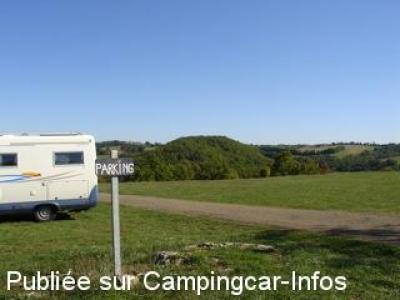

ASN = Aire de services avec stationnement nuit possible de :
CAYLUS
(N° 385)
Accès/adresse :
Parking de la Base de Loisirs
Avenue du 8 Mai 1945
82160 CAYLUS
Avenue du 8 Mai 1945
82160 CAYLUS
Latitude : (Nord) 44.23363° Décimaux ou 44° 14′ 1′′
Longitude : (Est) 1.77225° Décimaux ou 1° 46′ 20′′
Tarif : Gratuit
Type de borne : Plateforme
Services :


Possibilité repas
Autres informations :
Ouverte de Mars à Octobre,
10 emplacements,
Tel : +33 (0) 563 670 617
Au bord du lac de Labarthe

Le 20/10/2009 par Guido - ND des Grâces parking
Le 26/08/2006 par jipe
Le 26/08/2006 par jipé / aire de vidange
de
Guido Clinckemaillie
le 20/10/2009 :
This is indeed as others commented, not a nice place to stay. Much better is to go 5 km north to Lacapelle-Livron, where there is a very quiet parking near the chapel of Notre Dame des Grâces. It is situated at the end of small road with a superb view.
Guido ON7CI
This is indeed as others commented, not a nice place to stay. Much better is to go 5 km north to Lacapelle-Livron, where there is a very quiet parking near the chapel of Notre Dame des Grâces. It is situated at the end of small road with a superb view.
Guido ON7CI
de
romain17
le 28/05/2009 :
Impossible de se mettre sur cette aire,... Nous avons continué sur Villeneuve d'Aveyron qui est très sympa avec un joli village médiéval. §
Impossible de se mettre sur cette aire,... Nous avons continué sur Villeneuve d'Aveyron qui est très sympa avec un joli village médiéval. §
de
Gaubert Jean-Michel
le 23/03/2008 :
Nous avons passé la nuit tous seuls au calme!!! Certes, elle est à l'écart pas, très bien indiquée, mais elle existe. La vidange n'est pas possible, une barrière bloque l'accès qui s'est affaissé. Par contre, le plein d'eau, gratuit, est possible.
Nous avons passé la nuit tous seuls au calme!!! Certes, elle est à l'écart pas, très bien indiquée, mais elle existe. La vidange n'est pas possible, une barrière bloque l'accès qui s'est affaissé. Par contre, le plein d'eau, gratuit, est possible.